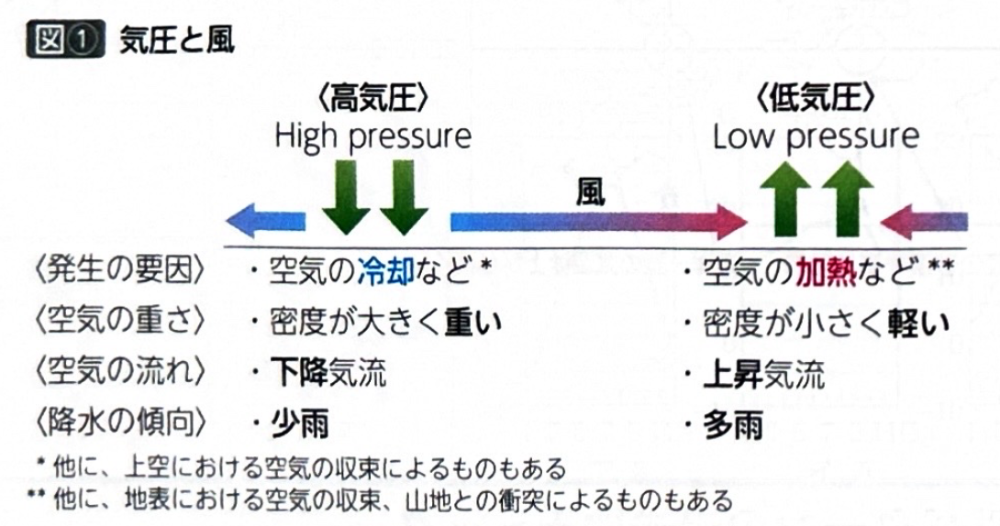
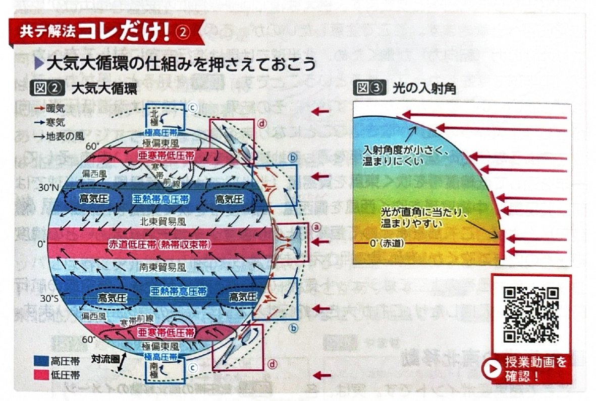
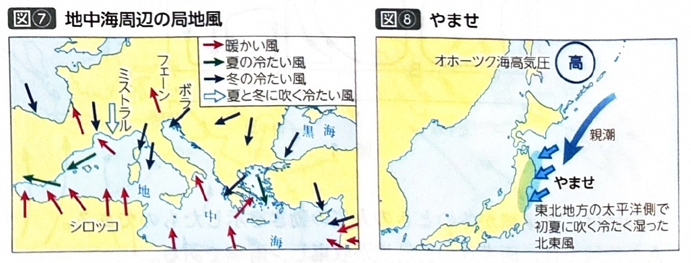

第2章 気候・植生・土壌 - 気圧と風、降水(1)
ポイント総復習
1. 気圧と風の基本
気圧とは「空気が地表面を押す力の強さ」のことです。
- 低気圧：空気が温められて軽く（または他の要因で）なり、上に昇る上昇気流が発達した状態。雲ができやすく天気が崩れやすい。
- 高気圧：空気が冷やされて重く（または他の要因で）なり、下に沈む下降気流が発達した状態。雲が消えやすく晴れやすい。
- 風の向き：風は常に、気圧の高い高気圧から低気圧へ向かって吹きます。

2. 大気大循環と気圧帯
地球上には、緯度帯ごとに4つの気圧帯が形成されています。これが地球規模の気候（特に降水量）を決定づける重要な要素です。
| 気圧帯の名称 | 位置 | メカニズムと降水の特徴 |
|---|---|---|
| 赤道低圧帯 （熱帯収束帯） |
赤道付近 | 太陽に強く熱せられ、強い上昇気流が発生。 雨が多く降り、多雨地域となる。 |
| 亜熱帯高圧帯 （中緯度高圧帯） |
緯度20〜30度付近 | 赤道で上昇した空気がこの付近で下降してくる。 下降気流のため乾燥し、世界の砂漠が多く分布する。 |
| 亜寒帯低圧帯 （高緯度低圧帯） |
緯度60度付近 | 南からの暖かい風（偏西風）と北からの冷たい風（極偏東風）がぶつかり上昇気流が発生。 前線ができやすく、比較的多雨地域となる。 |
| 極高圧帯 | 極付近（90度） | 極寒のため空気が冷やされて重くなり、強い下降気流が発生。 高気圧に覆われるため、実は少雨（少雪）地域である。 |
3. 恒常風
一年中、ほぼ決まった方向に吹く地球規模の風を「恒常風」といいます。風は地球の自転によるコリオリの力（転向力）の影響で、北半球では進行方向の右へ、南半球では進行方向の左へ曲がって吹きます。
- 貿易風：亜熱帯高圧帯から赤道低圧帯へ向かって吹く風。（北半球では北東から、南半球では南東から吹く）
- 偏西風：亜熱帯高圧帯から亜寒帯低圧帯へ向かって吹く西風。中緯度帯の気候に大きな影響を与え、上空にはジェット気流が吹く。
- 極偏東風（極東風）：極高圧帯から亜寒帯低圧帯へ向かって吹く冷たい東風。

4. 気圧帯の南北移動
ここが超重要ポイントです。各気圧帯は一年中同じ場所に固定されているわけではありません。
地球は地軸が傾いたまま公転しているため、太陽の光が最も強く当たる場所（直射位置）が季節によって移動します。それに引きずられるように、気圧帯や恒常風の帯全体が南北に移動します。
- 北半球の夏（7月頃）：太陽の直射位置が北回帰線側に移動するため、気圧帯全体が北上する。
- 北半球の冬（1月頃）：太陽の直射位置が南回帰線側に移動するため、気圧帯全体が南下する。
この「気圧帯のズレ」によって、乾季と雨季がはっきり分かれる気候（サバナ気候や地中海性気候など）が生まれます。

基礎問題（理解度チェック）
Q1. 気圧と風の基本について、空欄を埋めなさい。
空気が温められて軽くなると、上に昇る
が発生し、地表を押す力が弱まるため
となる。風は常に、気圧の高い
から、気圧の低い
へ向かって吹く。
Q2. 大気大循環による気圧帯の特徴について、空欄を埋めなさい。
赤道付近は強く熱せられて上昇気流が発生し
となり、雨が多く降る
地域となる。一方、緯度20〜30度付近では上空から空気が降りてきて下降気流が発生し
となる。ここは高気圧に覆われて
しやすいため、世界の砂漠の多くがこの緯度帯に分布している。
Q3. 恒常風とコリオリの力について、空欄を埋めなさい。
緯度20〜30度付近の亜熱帯高圧帯から、赤道低圧帯へ向かって吹く風を
といい、亜寒帯低圧帯へ向かって中緯度帯を吹く西風を
という。これらの風は、地球の自転によって生じる
の影響を受け、北半球では進行方向の
へ曲がって吹く。
Q4. 赤道低圧帯などの各気圧帯は、一年中地球上の同じ場所に固定されているわけではなく、太陽の直射位置の変化に伴って、北半球の夏（7月頃）には全体的に北上し、冬（1月頃）には全体的に南下する。
Q5. 極付近は極寒のため空気が冷やされて上昇気流が発生し「極低圧帯」となる。そのため、雪が一年中降り続く「多雪（多雨）」地域である。